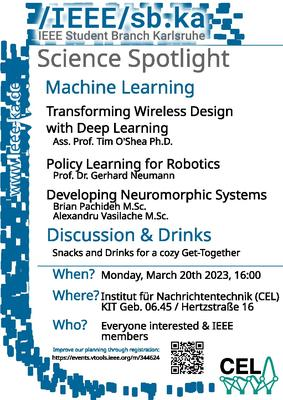

We are happy to announce or first Science Spotlight event focusing on varied research on Machine Learning in different areas of engineering.
The Science Spotlight will take place on the 20th of March 2023 at the Communication Engineering Lab (CEL), room 213/214 in building 06.45 at the campus west, starting at 16:00. We welcome all students, researchers and IEEE members that are interested in the topics.
We have planned three presentations and one demostration:
AI-Native Wireless: Transforming Wireless Design with Deep Learning (Ass. Prof. Tim O'Shea Ph.D.)
Over the past decade, deep learning has revolutionized signal processing in fields like speech, language, and vision. But it's also transforming the world of wireless signal transmission quickly. In this talk, we'll explore how data-driven approaches are used to design machine learning-based radio signal detection, identification, and localization. We'll also discuss how machine learning is being used to create signal transmitters, receivers, and encodings for wireless signals. This exciting area of research has already yielded some impressive prototypes and results and is sure to play a significant role in the future of OpenRAN 5G, 5G Advanced, and 6G wireless systems. Join us to learn more about the software challenges and research trends in this field, and how AI-native communications create disruption.
Policy Learning for Robotics (Prof. Dr. Gerhard Neumann)
Machine learning, robotics and human-robot interaction pose multiple interesting research questions. We will dive into how human non-expert can intuitively teach a robot complex skills as well as allow a robot to learn how to assist and collaborate with humans in an intelligent way.
Developing Neuromorphic Systems (Brian Pachideh M.Sc., & Alexandru Vasilache M.Sc.)
Our colleaugues at FZI design systems that differ from the classical artificial neural networks and will present us challenges and advantages of designing systems closer corresponding to the biological inspiration that seeding the research into neural networks.
For better easier planning, please register here.
TLDR; The Science Spotlight is taking place on the 20.03.2023 starting at 16:00 in room 213/214 at the Communication Engineering Lab (CEL) in building 06.45 at Hertzstraße 16, 76187 Karlsruhe (KIT Campus West). There will be snacks, there will be drinks and hopefully lots of interesting discussion. Anyone interested is invited. For better easier planning, please register here.


{kind=link}
{kind=link}
{kind=link}
{kind=link}